Rows: 150,346
Columns: 14
$ business_id <chr> "Pns2l4eNsfO8kk83dixA6A", "mpf3x-BjTdTEA3yCZrAYPw", "tUFr…
$ stars <dbl> 5.0, 3.0, 3.5, 4.0, 4.5, 2.0, 2.5, 3.5, 3.0, 1.5, 3.5, 4.…
$ name <chr> "Abby Rappoport, LAC, CMQ", "The UPS Store", "Target", "S…
$ is_open <dbl> 0, 1, 0, 1, 1, 1, 1, 1, 0, 1, 1, 1, 1, 1, 0, 1, 1, 1, 1, …
$ postal_code <chr> "93101", "63123", "85711", "19107", "18054", "37015", "63…
$ address <chr> "1616 Chapala St, Ste 2", "87 Grasso Plaza Shopping Cente…
$ categories <chr> "Doctors, Traditional Chinese Medicine, Naturopathic/Holi…
$ hours <chr> NA, "{'Monday': '0:0-0:0', 'Tuesday': '8:0-18:30', 'Wedne…
$ longitude <dbl> -119.71120, -90.33570, -110.88045, -75.15556, -75.47166, …
$ city <chr> "Santa Barbara", "Affton", "Tucson", "Philadelphia", "Gre…
$ latitude <dbl> 34.42668, 38.55113, 32.22324, 39.95551, 40.33818, 36.2695…
$ review_count <dbl> 7, 15, 22, 80, 13, 6, 13, 5, 19, 10, 6, 10, 28, 10, 100, …
$ attributes <chr> "{'ByAppointmentOnly': 'True'}", "{'BusinessAcceptsCredit…
$ state <chr> "CA", "MO", "AZ", "PA", "PA", "TN", "MO", "FL", "MO", "TN…Group_Report
Deliverable Group 12
This report was created for the Data Preparation and Workflow Management course, taught by Hannes Datta at the Tilburg School of Economics and Management, as part of the Master’s program in Marketing Analytics. It is a collaboration by Team 12, consisting of:
Kris Bruurs - k.bruurs@tilburguniversity.edu
Ly Ba Tho - b.t.ly@tilburguniversity.edu
Jelle de Bie - j.debie@tilburguniversity.edu
Zeynep Yavlal - z.yavlal@tilburguniversity.edu
Bart van de Mortel - b.h.l.vdmortel@tilburguniversity.edu
Do influential Yelp users give higher ratings to take-out restaurants compared to non-influential users, and how does the factor of location affect these ratings?
1. Introduction
Since its launch in 2004, Yelp, as one of the largest online review platforms, has played a crucial role in shaping the reputations of businesses, particularly in the food industry. While there is an abundance of research analyzing Yelp reviews (Agarwal, Pelullo, & Merchant 2019; Arthur, Etzioni, & Schwartz, 2019), most studies focus on general patterns of consumer behavior (Fogel, J. and Zachariah, S., 2017), sentiment analysis (Guerreiro & Rita, 2020), or the detection of fake reviews (Lee, Ham, Yang, & Koo, 2018). What these studies largely overlook, however, is the significant role that influential users—those with elite status, numerous followers, or high review counts—play in shaping business ratings (Pranata, I. and Susilo, W., 2016). These users wield disproportionate influence on the platform, and their ratings are often perceived as more credible and trustworthy than those of regular users (Tucker, T., 2011).
1.1 Research Motivation
In competitive sectors like the food industry, where reputation can make or break a business, understanding the impact of these influential users is essential, as evidenced in a study conducted by Nakayama and Wan (2018) about one-third of customers rely on online reviews when choosing a restaurant and over half of 18-to-34-year-olds factor reviews into their dining decisions. Moreover, while the food industry on Yelp has been extensively studied (Anderson and Magruder, 2012) because of its tremendous impacts on business outcomes (Luca, 2016), the take-out restaurant niche has received minimal attention. The majority of existing studies on take-out restaurants emphasize negative aspects such as health risks, obesity, and food safety concerns (Jeffery et al., 2006; Baek et al., 2022). These studies tend to focus on the health implications of frequent take-out consumption but fail to address the consumer dynamics on platforms like Yelp, where reviews have the power to influence public perception and business success (Jiménez, et al. 2013). Additionally, location, particularly in terms of region, state, and city, plays a pivotal role in how take-out restaurants are rated on Yelp (Tayeen, et al., 2019). Regional preferences can influence the types of cuisines that receive higher ratings, with some regions showing a stronger preference for local or niche food options (Rahimi, et al., 2018). State-level factors such as regulations, food safety laws, and even cultural food trends may also impact how users perceive and rate take-out establishments. Additionally, within cities, neighborhood dynamics like the level of urbanization, socio-economic status, and competition with nearby restaurants can lead to significant variations in ratings (Tayeen, et al., 2021). Influential Yelp users in major metropolitan areas may also drive more reviews and higher visibility for restaurants, skewing ratings compared to those in smaller cities or rural areas. This gap in the literature calls for a deeper investigation into how influential users interact with take-out restaurants, especially as take-out has become increasingly important in the post-pandemic dining landscape.
The accessibility and usefulness of the output from this study significantly benefit other students and the larger scientific community. By developing an automated and reproducible workflow using open-source tools like R, this research provides a template that others can easily adapt for similar analyses. The study’s findings and the associated code can be shared on public platforms like GitHub, making them readily available for educational purposes and further research. The workflow includes data extraction, cleaning, transformation, and modeling processes, all documented and scripted to ensure transparency and repeatability. Moreover, the comprehensive HTML report serves as a valuable resource that clearly communicates the research methods, analyses, and findings. It can be used as a teaching tool in academic settings, demonstrating how to approach complex data analyses and interpret results within a real-world context.
1.2 Research Question
This study aims to address the gap in the dynamics of online reviews, particularly from influential Yelp users, by asking: Do influential Yelp users give higher ratings to take-out restaurants compared to non-influential users, and how does the factor of location affect these ratings? This research is critical for several reasons. First, understanding the behavior of influential users could help businesses better manage their online reputations, particularly in a niche market like take-out dining. Second, examining how location—whether at the regional, state, or city level—impacts ratings can provide valuable insights into consumer preferences. Location-specific factors, such as regional food trends, city demographics, and neighborhood characteristics, may influence how users perceive and rate businesses. For take-out restaurants operating in highly competitive environments, especially those without an established offline presence, this research could offer practical strategies for improving ratings and attracting new customers by understanding how geographic context shapes consumer perceptions.
1.3 Conceptual Model
1.3.1 ANOVA
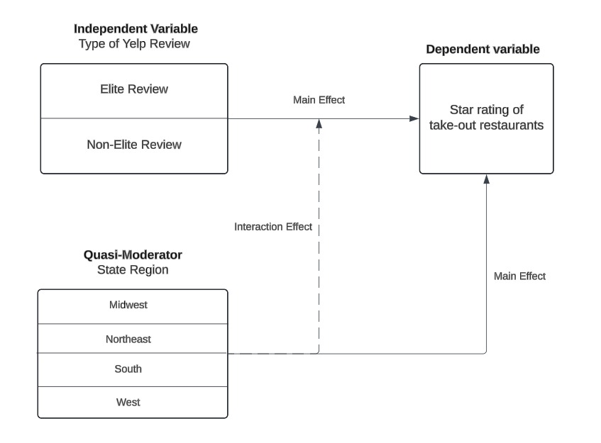
Independent Variable (Type of Yelp Review): Elite Review, Non-Elite Review
- This variable represents the categorization of Yelp reviews into two groups: Elite and Non-Elite reviews. The main effect of this variable is to examine how being an elite reviewer or a non-elite reviewer influences the star rating of take-out restaurants. Specifically, we aim to determine whether elite reviewers provide systematically different ratings compared to non-elite reviewers.
Quasi-Moderator (State Region): Midwest, Northeast, South, West
The state region acts as a quasi-moderator in the model. It includes four categories: Midwest, Northeast, South, and West. The main effect of this quasi-moderator is on the star rating of take-out restaurants, allowing us to determine how different regions influence the overall ratings.
Additionally, interaction effects between the independent variable (type of Yelp review) and the quasi-moderator (state region) will be analyzed. This means we are interested in whether the influence of being an elite or non-elite reviewer on the star ratings of take-out restaurants changes based on the region. For example, elite reviewers in the Midwest might rate take-out restaurants differently compared to elite reviewers in the West.
To explore these relationships, ANOVA will be used as the primary research method. This method is appropriate for comparing the main effects of the independent variable (type of Yelp review) and the quasi-moderator (state region) on the dependent variable (star rating of take-out restaurants). Specifically, ANOVA will allow us to determine whether there are statistically significant differences in star ratings based on the type of reviewer (elite vs. non-elite) and how these effects interact with the state region. The analysis will incorporate columns such as review_id, user_id, business_id, stars_user, review_count_user, fans, state, city, stars_business, review_count_business, is_open, elite_review, division, region, and take_out. By examining these factors, ANOVA will help reveal any meaningful differences in ratings attributable to both reviewer influence and regional variation.
1.3.2 Regression
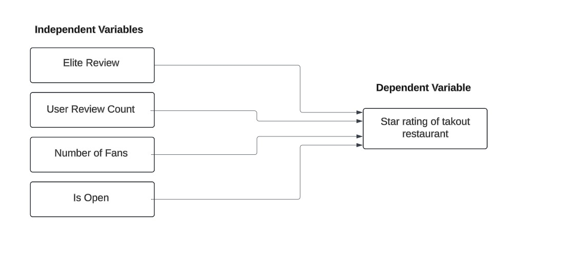
Independent Variables
Elite Review: This variable indicates whether the review was made by an elite Yelp user or a non-elite user. The main effect of this variable is to assess whether there are systematic differences in the star rating of take-out restaurants based on the reviewer status. Specifically, we aim to determine if elite reviewers provide higher or lower ratings compared to non-elite reviewers.
User Review Count: This variable represents the total number of reviews a user has submitted. The main effect of this variable is to explore how user engagement (as measured by the number of reviews) impacts the star rating of take-out restaurants. We aim to understand if prolific reviewers tend to give higher or lower ratings compared to those with fewer reviews.
Fans: This variable captures the number of fans a user has, serving as an indicator of their influence within the Yelp community. The main effect of this variable is to determine how a user’s popularity impacts their ratings of take-out restaurants, allowing us to see if more influential users provide systematically different ratings.
Is_Open: This variable indicates whether the restaurant is currently open or closed at the time of rating. The main effect of this variable is to investigate whether the operational status of a restaurant influences the star rating of take-out restaurants. Specifically, we are interested in whether open restaurants are rated differently compared to those that are closed.
Dependent Variable
- Star Rating of Take-Out Restaurants: The outcome we are interested in predicting is the star rating given to take-out restaurants. By analyzing the effects of elite status, user review count, user fans, and restaurant operational status, we aim to gain a deeper understanding of the factors influencing these ratings.
To complement the initial ANOVA analysis, regression analysis will be used to provide a deeper understanding of the relationships between the independent variables and the star rating of take-out restaurants. While ANOVA identifies significant differences in star ratings based on reviewer type and region, regression allows us to quantify the unique contributions of multiple predictors, such as user review count, fans, is_open, and restaurant location. This approach helps determine the effect size and direction of these influences, providing a comprehensive view of how reviewer characteristics and location impact ratings.
1.4 Repository Structure and Documentation
├── README.md
├── makefile
├── updated-project
├── .Rhistory
├── .RData
├── .gitignore
├── 1-docs
│ ├── Group Report.Rproj
│ ├── Group Report.HTML
├── 2-temporary_data
│ ├── cleaned_sample_data
│ ├── sample_data_elite_encoder
│ ├── business_data.csv
│ ├── user_data.csv
│ ├── review_data.csv
│ ├── sample_data.csv
├── 3-final_data
│ ├── takeout_data.csv
├── 4-testing_code
│ ├── download_files_automatically.R
│ ├── label_elite_users.R
│ ├── matching_elite_format.R
│ ├── tar_format_to_json_converter.R
├── 5-external_code
│ ├── json_to_csv_converter.py
├── 6-source_code
│ ├── 0_install_packages.R
│ ├── 1_download_data.R
│ ├── 2_prepare_data.R
│ ├── 3_preprocessing_data.R
│ ├── 4_plot_data.R
│ ├── 5_analyse_data.R
├── 7-plots
├── 8-results
├── 9-shiny_app2. Data Preparation & Analysis
2.1 Data Exploration
Before starting the research, it is advisable to install all the necessary packages that will be used in the study to streamline the workflow.
here
rstudioapi
rstudioapi
googledrive
readr
dplyr
reticulate
knitr
ggcorrplot
sjPlot
sjmisc
gridExtra
2.1.1 Data Download
From the Yelp database the business, user, and review data files are downloaded to answer the research question.
- Yelp Database: https://www.yelp.com/dataset/download
Since the data set is provided in a .tar archive, we need to extract the individual JSON files using R. After extraction, the next step is to convert these JSON files into CSV format using Python scripts. Although we’ve included R and Python code for these processes, we recommend skipping sections 2.1.1.1 and 2.1.1.2. Instead, proceed directly to Section 2.1.1.3, where we introduce code that can automatically download all the necessary files used in this research.
2.1.1.1 Extract a Yelp dataset in .tar format to separate JSON files
# Install the archive package
install.packages("archive")
# Load the archive package
library(archive)
library(tidyverse)
# Specify the path to your .rar file
rar_file <- "yelp_dataset.tar"
# Verify if R can see the file
file.exists(rar_file)
# List the contents of the .rar file
contents <- archive::archive(rar_file)
print(contents)
# Specify the extraction directory (make sure it is a directory)
extract_dir <- "extracted_files"
# Create the directory if it doesn't exist
if (!dir.exists(extract_dir)) {
dir.create(extract_dir)
}
# Extract the files
extracted_files <- archive::archive_extract(rar_file, dir = extract_dir)
print(extracted_files)2.1.1.2 Extract Yelp datasets in .JSON format to CSV files
# -*- coding: utf-8 -*-
import argparse
import csv
import json
import os
def read_and_write_file(json_file, csv_file, column_names):
with open(json_file, 'r', encoding='utf-8') as f, open(csv_file, 'w', newline='', encoding='utf-8') as csvfile:
writer = csv.DictWriter(csvfile, fieldnames=column_names)
writer.writeheader()
for line in f:
data = json.loads(line)
writer.writerow(data)
print(f"CSV file '{csv_file}' has been created successfully.")
def get_superset_of_column_names_from_file(json_file):
column_names = set()
with open(json_file, 'r', encoding='utf-8') as f:
for line in f:
data = json.loads(line)
column_names.update(data.keys())
return list(column_names)
def process_line(line_value):
row = []
if isinstance(line_value, str):
row.append('{0}'.format(line_value))
elif line_value is not None:
row.append('{0}'.format(line_value))
else:
row.append('')
return row
if __name__ == '__main__':
# Convert a yelp dataset file from json to csv.
print("Starting the conversion process...")
parser = argparse.ArgumentParser(
description='Convert Yelp Dataset Challenge data from JSON format to CSV.',
)
parser.add_argument(
'json_file',
type=str,
help='The json file to convert.',
)
args = parser.parse_args()
json_file = args.json_file
csv_file = '{0}.csv'.format(json_file.split('.json')[0])
# Print current working directory
print(f"Current working directory: {os.getcwd()}")
# Print absolute path of the JSON file
abs_json_file_path = os.path.abspath(json_file)
print(f"Absolute path of JSON file: {abs_json_file_path}")
if not os.path.isfile(json_file):
print(f"Error: The file '{json_file}' does not exist.")
exit(1)
print(f"Input JSON file: {json_file}")
print(f"Output CSV file: {csv_file}")
column_names = get_superset_of_column_names_from_file(json_file)
print(f"Column names: {column_names}")
read_and_write_file(json_file, csv_file, column_names)
print("Conversion process completed.")2.1.1.3 Download Yelp Data directly from Google Drive
To streamline the process, we’ve provided an R script that automatically downloads all the necessary data sets for this study only. Simply copy and run the code, and it will retrieve all required files directly into your working directory. However, please be aware that for the code to function properly, you’ll need to install both the googledrive and tidyverse packages. These packages are crucial, especially when dealing with large files, as they ensure smooth data handling and integration within your R environment.
### Libraries ###
library(tidyverse)
library(here)
library(googledrive)
library(knitr)
### Authentication ###
drive_auth()
### Input ###
# File ID from Google Drive URLs
business_file_id <- '12o5mGJV8ck_Kqi_x23WF1HbsNGIP70ru'
user_file_id <- '1g-Sy1IMEqrPtPtcc1t2U78iR9Eh8EMtC'
review_file_id <- '1U5rSviYm-EfCxx23EiIAYqNH2JwHp3DT'
# Paths to save the files in the working directory
business_file <- here("2-temporary_data", "business_data.csv")
user_file <- here("2-temporary_data", "user_data.csv")
review_file <- here("2-temporary_data", "review_data.csv")
# Download files using googledrive package
drive_download(as_id(business_file_id), path = business_file, overwrite = TRUE)
drive_download(as_id(user_file_id), path = user_file, overwrite = TRUE)
drive_download(as_id(review_file_id), path = review_file, overwrite = TRUE)
# Load the CSV files into variables
business_data <- read_csv(business_file)
user_data <- read_csv(user_file)
review_data <- read_csv(review_file)2.1.2 Data Inspection
The first step after loading the data is to take a look at the different variables that are included in the three different data files.
2.1.2.1 business_data
The business_data set consists of the following variables:
| Variable | Description | Data Type |
|---|---|---|
| business_id | A unique character string for each business | Character |
| name | The business name | Character |
| address | The full address of the business | Character |
| city | The city name where the business is located | Character |
| state | The state name where the business is located | Character |
| postal_code | The postal code of the business | Character |
| latitude | The latitude of the business location | Numeric |
| longitude | The longitude of the business location | Numeric |
| stars | The average star rating rounded to half-stars | Numeric |
| review_count | The number of reviews | Numeric |
| is_open | Variable that shows with 0 (closed) or 1 (open) | Numeric |
| attributes | Business attributes to values | Character |
| categories | An array of different business categories | Character |
| hours | An object of key day-to-value hours | Character |
2.1.2.2 user_data
The user_data consists of the following variables:
| Variable | Description | Data Type |
|---|---|---|
| user_id | A unique character string as user identification | Character |
| name | The user’s first name | Character |
| review_count | The number of reviews written by an individual user | Numeric |
| yelping_since | Date when user joined Yelp | Character |
| friends | An array of the user’s friends as user id’s | Character |
| useful | Number of ‘useful’ votes send by user | Numeric |
| funny | Number of ‘funny’ votes send by user | Numeric |
| cool | Number of ‘cool’ votes send by user | Numeric |
| fans | The number of fans a user has | Numeric |
| elite | The years the user had an ‘elite’ status on Yelp | Numeric |
| average_stars | Average rating of all reviews | Numeric |
| compliment_hot | Number of ‘hot’ compliments received by the user | Numeric |
| compliment_more | Number of ‘more’ compliments received by the user | Numeric |
| compliment_profile | Number of ‘profile’ compliments received by the user | Numeric |
| compliment_cute | Number of ‘cute’ compliments received by the user | Numeric |
| compliment_list | Number of ‘list’ compliments received by the user | Numeric |
| compliment_note | Number of ‘note’ compliments received by the user | Numeric |
| compliment_plain | Number of ‘plain’ compliments received by the user | Numeric |
| compliment_cool | Number of ‘cool’ compliments received by the user | Numeric |
| compliment_funny | Number of ‘funny’ compliments received by the user | Numeric |
| compliment_writer | Number of ‘writer’ compliments received by the user | Numeric |
| compliment_photo | Number of ‘photo’ compliments received by the user | Numeric |
2.1.2.3 review_data
The review_data set consists of the following variables:
| Variable | Description | Data Type |
|---|---|---|
| review_id | Unique review id | Character |
| user_id | An unique character string as user id | Character |
| business_id | A unique character string for each business | Character |
| stars | Star rating of the review | Numeric |
| date | Date of review, formatted YYYY-MM-DD | Character |
| text | The review text | Character |
| useful | The number of ‘useful’ votes received | Numeric |
| funny | The number of ‘funny’ votes received | Numeric |
| Cool | The number of ‘cool’ votes received | Numeric |
2.2 Data Processing
Due to limitations such as computational memory constraints and the focus on a manageable data set for in-depth analysis, we have decided to analyze a reduced sample of 323,856 observations from the Yelp data set. This sample size allows us to perform comprehensive statistical analyses while maintaining computational efficiency. Future research can extend this work by examining the entire population of Yelp reviews, which could validate our findings on a larger scale and potentially reveal additional insights into the behavior of influential users in the context of take-out restaurants.
Given the large size of the three data files and the presence of many columns not pertinent to our study, we first filtered the data sets to retain only the necessary variables before merging them. This step reduced the data to a manageable size and ensured that only relevant information was included in the subsequent analysis.
2.2.1 Data Inspection
We began by thoroughly examining the three large data sets to understand their structure, content, and potential issues such as missing values or inconsistencies.
business data
user data
Rows: 1,987,897
Columns: 22
$ friends <chr> "NSCy54eWehBJyZdG2iE84w, pe42u7DcCH2QmI81NX-8qA, Ej…
$ funny <dbl> 1259, 13066, 1010, 330, 15, 9940, 1, 102, 40, 20, 0…
$ elite <dbl> 2.007000e+03, 2.009201e+51, 2.009201e+19, 2.009201e…
$ fans <dbl> 267, 3138, 52, 28, 1, 1357, 1, 23, 7, 4, 1, 31, 4, …
$ useful <dbl> 7217, 43091, 2086, 512, 29, 14953, 6, 399, 109, 154…
$ average_stars <dbl> 3.91, 3.74, 3.32, 4.27, 3.54, 3.85, 2.75, 3.73, 4.0…
$ compliment_list <dbl> 18, 251, 3, 2, 0, 147, 0, 0, 0, 0, 0, 5, 0, 0, 0, 3…
$ compliment_writer <dbl> 239, 1521, 35, 10, 0, 815, 0, 5, 3, 0, 0, 24, 1, 0,…
$ compliment_photos <dbl> 180, 1946, 18, 9, 0, 323, 0, 0, 1, 0, 0, 7, 0, 0, 0…
$ compliment_hot <dbl> 250, 1145, 89, 24, 1, 1713, 0, 4, 2, 0, 0, 23, 4, 0…
$ user_id <chr> "qVc8ODYU5SZjKXVBgXdI7w", "j14WgRoU_-2ZE1aw1dXrJg",…
$ compliment_profile <dbl> 55, 184, 10, 1, 0, 191, 0, 2, 0, 0, 0, 1, 0, 0, 0, …
$ compliment_more <dbl> 65, 264, 13, 4, 1, 163, 0, 7, 0, 0, 0, 9, 0, 0, 0, …
$ compliment_note <dbl> 232, 1847, 66, 12, 1, 1212, 0, 8, 3, 1, 0, 31, 1, 0…
$ yelping_since <dttm> 2007-01-25 16:47:26, 2009-01-25 04:35:42, 2008-07-…
$ compliment_plain <dbl> 844, 7054, 96, 16, 1, 5696, 1, 6, 4, 6, 0, 41, 5, 0…
$ compliment_cute <dbl> 56, 157, 17, 6, 0, 361, 0, 0, 3, 0, 0, 3, 0, 0, 0, …
$ cool <dbl> 5994, 27281, 1003, 299, 7, 11211, 0, 143, 46, 23, 1…
$ review_count <dbl> 585, 4333, 665, 224, 79, 1221, 12, 358, 40, 109, 4,…
$ compliment_funny <dbl> 467, 3131, 119, 26, 0, 2543, 0, 12, 5, 3, 0, 36, 0,…
$ compliment_cool <dbl> 467, 3131, 119, 26, 0, 2543, 0, 12, 5, 3, 0, 36, 0,…
$ name <chr> "Walker", "Daniel", "Steph", "Gwen", "Karen", "Jane…review data
Rows: 500,000
Columns: 9
$ funny <dbl> 0, 0, 1, 0, 2, 0, 1, 0, 0, 0, 7, 0, 0, 0, 0, 0, 0, 2, 0, 0…
$ review_id <chr> "5IkRlhzFJaBq9mtXAdPYTw", "YGMq3Ui5S6V8nr7qx8aScQ", "BfTIw…
$ stars <dbl> 4, 1, 2, 3, 5, 4, 4, 3, 5, 1, 1, 4, 1, 4, 3, 4, 5, 1, 5, 3…
$ business_id <chr> "CxXYiJBkq9kqsgtdagqVgw", "eRdMVvBObDLkZ5ykz1irkg", "D44IB…
$ useful <dbl> 1, 1, 4, 1, 8, 0, 2, 0, 0, 2, 7, 0, 0, 2, 0, 0, 0, 6, 0, 0…
$ text <chr> "Bacio is a great little neighborhood restaurant. My husb…
$ user_id <chr> "vfKLxkxyr6-81WgeSBiHMg", "Zi4EOZ-BQk-6sK3Qd-Ucnw", "S_w84…
$ cool <dbl> 1, 0, 1, 0, 5, 0, 2, 0, 0, 0, 5, 0, 0, 1, 1, 0, 0, 0, 0, 0…
$ date <dttm> 2010-12-24 19:01:48, 2020-11-23 13:42:32, 2010-09-20 14:2…2.2.2 Variable Selection
To focus on relevant information and reduce computational complexity, we selected only the variables necessary for our study. This involved identifying and retaining columns that contribute directly to our research objectives while discarding irrelevant or redundant data.
The different variables are evaluated and a selection of variables is chosen to keep in the data set to help answer the research question.
These variables in the business data set include:
business_id
city
state
stars
review_count
is_open
attributes
These variables in the user data set include:
user_id
review_count
fans
elite
These variables in the review data set are:
user_id
business_id
review_id
stars
2.2.3 Data Merging
After selecting the necessary columns in each individual data set, we merged them based on common keys. This integration allowed us to have a comprehensive view of the data, combining user information, business details, and review content into a single data set.
| user_id | review_count.x | fans | elite | review_id | business_id | stars.x | name | state | city | stars.y | review_count.y | is_open | attributes |
|---|---|---|---|---|---|---|---|---|---|---|---|---|---|
| q3tdPA76s36oc8v5F8XB0Q | 2 | 0 | NA | NA | NA | NA | NA | NA | NA | NA | NA | NA | NA |
| NcsMgXGvsCthFvbnbXQ8Sg | 4 | 0 | NA | NA | NA | NA | NA | NA | NA | NA | NA | NA | NA |
| T6duld__CyiOa4C258gyww | 10 | 1 | NA | 2RsuWdxR7OF_b4kCLRwyHA | iuKzxuAgf2ttgOyxyLHEMQ | 4 | Philly Dance Fitness | PA | Philadelphia | 5 | 70 | 1 | {‘ByAppointmentOnly’: ‘False’, ‘BusinessAcceptsCreditCards’: ‘True’, ‘BusinessParking’: “{‘garage’: False, ‘street’: True, ‘validated’: False, ‘lot’: False, ‘valet’: False}”, ‘GoodForKids’: ‘False’, ‘WheelchairAccessible’: ‘False’, ‘BikeParking’: ‘True’} |
| HWKrzYmRIWsNkn6-o_7OXg | 15 | 0 | NA | NA | NA | NA | NA | NA | NA | NA | NA | NA | NA |
| l_Wx6_nbDvtFgRPijyggAQ | 2 | 0 | NA | NA | NA | NA | NA | NA | NA | NA | NA | NA | NA |
| 0jZFs6uPO–VVVBf6XbRxw | 4 | 0 | NA | NA | NA | NA | NA | NA | NA | NA | NA | NA | NA |
2.2.4 Data Transformation
To prepare the new data set for subsequent use, we transformed the data by renaming the columns to have meaningful and easily traceable names. For example, stars.x -> stars_user, stars.y -> stars_business.
Next, we encoded the elite column using the dummy encoding method to convert it into a binary variable. This transformation allowed us to represent the ‘elite’ status numerically, assigning a value of 1 to elite users and 0 to non-elite users. By doing so, we made the elite variable suitable for statistical analysis and modeling techniques that require numerical input. This encoding is essential for including categorical variables in regression models, correlation analyses, and other quantitative methods. It enabled us to examine the impact of a user’s elite status on various outcomes, such as their rating behavior or influence within the platform. Converting categorical data into a numerical format ensures that the algorithms can process the information effectively, leading to more accurate and meaningful insights in our analysis.
To thoroughly extract meaningful insights from the data set and address our research question comprehensively, we enhanced the data set by creating additional columns, specifically state_divisions and state_regions. The purpose of these new columns is to categorize the data more effectively based on geographic attributes, enabling us to conduct a more granular analysis. By segmenting the data set into distinct state divisions and regions, we can capture the influence of geographical variations on user ratings, thus diversifying and deepening our analysis. This approach allows us to identify patterns and trends that might differ across various locations, providing a more nuanced understanding of how influential users rate take-out restaurants.
In the subsequent step, we conduct a thorough examination to determine whether our data set contains any missing values, represented as ‘NA’. Identifying and addressing these ‘NA’ values is crucial to maintaining the quality and integrity of our analysis. Once detected, we proceed to remove these missing values to prevent them from skewing our results or introducing biases in the analysis. By eliminating incomplete data, we ensure that our data set remains consistent, allowing us to derive accurate insights and maintain the robustness of our statistical models.
To facilitate the analysis of take-out versus non-take-out restaurants, we create a new variable called take_out. This variable will serve as an indicator, where a value of 1 represents take-out restaurants, and a value of 0 represents non-take-out establishments. This binary classification allows us to clearly differentiate between the two categories and conduct targeted analyses specific to take-out services.
After defining this variable, we filter our data set to include only those rows where take_out is equal to 1. By focusing exclusively on take-out restaurants, we can delve deeper into the behaviors, characteristics, and ratings associated specifically with this subset of businesses, thereby providing more relevant insights in relation to our research question. This filtering step ensures that our analysis remains focused on the intended subject, eliminating any noise that non-take-out restaurants might introduce.
| review_id | user_id | business_id | stars_user | review_count_user | fans | username | state | city | stars_business | review_count_business | is_open | elite_review | division | region | take_out |
|---|---|---|---|---|---|---|---|---|---|---|---|---|---|---|---|
| 5IkRlhzFJaBq9mtXAdPYTw | vfKLxkxyr6-81WgeSBiHMg | CxXYiJBkq9kqsgtdagqVgw | 4 | 35 | 1 | Bacio | PA | Philadelphia | 4.0 | 183 | 0 | 0 | Middle Atlantic | Northeast | 1 |
| BfTIwT_T6BocpoIh-OPOKA | S_w84GR_6oie5WrWICeggg | D44IBRDtEScaWELey5IfCA | 2 | 4 | 0 | May’s Counter Chicken And Waffles | AZ | Tucson | 3.5 | 408 | 0 | 0 | Mountain | West | 1 |
| p6rpQJaUVS56I9YIn2lRpQ | VVvvI19zeT6ZQFMRgY4gMg | uGo0TCVNOcDQxMArUU0Jrw | 4 | 177 | 7 | Cajun Kitchen Cafe | CA | Goleta | 4.0 | 561 | 1 | 1 | Pacific | West | 1 |
| 7I-NtFInecg9oCrSQm9T1g | ex17cuzocQMKOca_CQb0jA | WnVNjr9zVEpK85T7dbAfEg | 4 | 51 | 7 | Santa Cruz Sushi | NV | Reno | 3.5 | 126 | 0 | 1 | Mountain | West | 1 |
| FrGOp2DqC44GeN44aycGLw | wiu8ACeBCxcn6JLnLSVokg | dzeBiAu0VAaVBbMwcV9GFw | 3 | 11 | 0 | Rooster - South Grand | MO | Saint Louis | 3.5 | 748 | 1 | 0 | West North Central | Midwest | 1 |
| ZWWKh5pTe5twqar_zbbSGw | dCehRsK_TxjZ3hHfwkVG2A | PVVFos1LDfD7iETY0w4vaA | 5 | 59 | 1 | Su Xing House | PA | Philadelphia | 4.0 | 417 | 1 | 0 | Middle Atlantic | Northeast | 1 |
2.3 Analysis and Deployment
2.3.1 Exploratory Data Analysis
In this stage, we use various visualization techniques such as bar charts, scatter plots, box plots, and histograms to explore relationships between variables, uncover patterns, and highlight trends within the data set. Effective data visualization enables us to quickly identify outliers, distributions, and correlations that might not be apparent from numerical summaries alone.
Plot 1: Distribution of User Ratings by Elite Status
The “Distribution of User Ratings by Elite Status” plot illustrates how ratings differ between elite and non-elite users. By comparing the distribution of ratings across these groups, we aim to determine whether elite users, who are often more experienced or influential, tend to rate businesses differently compared to regular users. This visualization helps us identify any biases or tendencies in rating behavior based on elite status, providing insights into how influential users perceive take-out restaurants compared to non-influential ones.
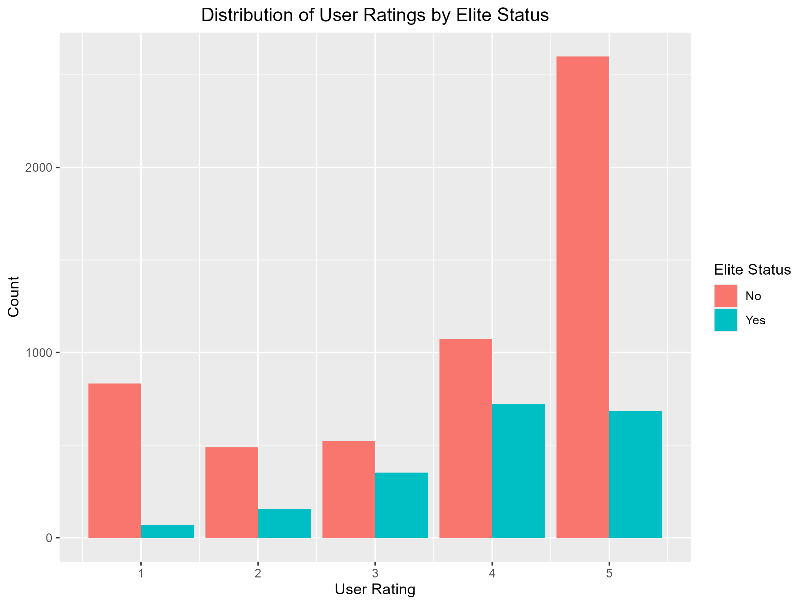
Plot 2: Distribution of User Ratings for Take-Out Restaurants by Elite Status
The “Distribution of User Ratings for Take-Out Restaurants by Elite Status” plot shows how ratings vary between elite and non-elite users specifically for take-out restaurants. This comparison allows us to assess whether elite users, who may have higher expectations or more experience, rate take-out establishments differently than non-elite users. By visualizing these distributions, we can better understand any distinctions in rating behavior linked to elite status within the context of take-out dining.

Plot 3: Average User Rating by Region and Elite Status
The “Average User Rating by Region and Elite Status” plot displays the average ratings given by users, segmented by both region and elite status. This plot helps us explore whether elite and non-elite users rate take-out restaurants differently across various regions. By analyzing these averages, we can identify regional patterns in user satisfaction and understand if elite users consistently rate higher or lower compared to non-elite users in different geographic areas, revealing potential regional biases or differences in rating behavior.
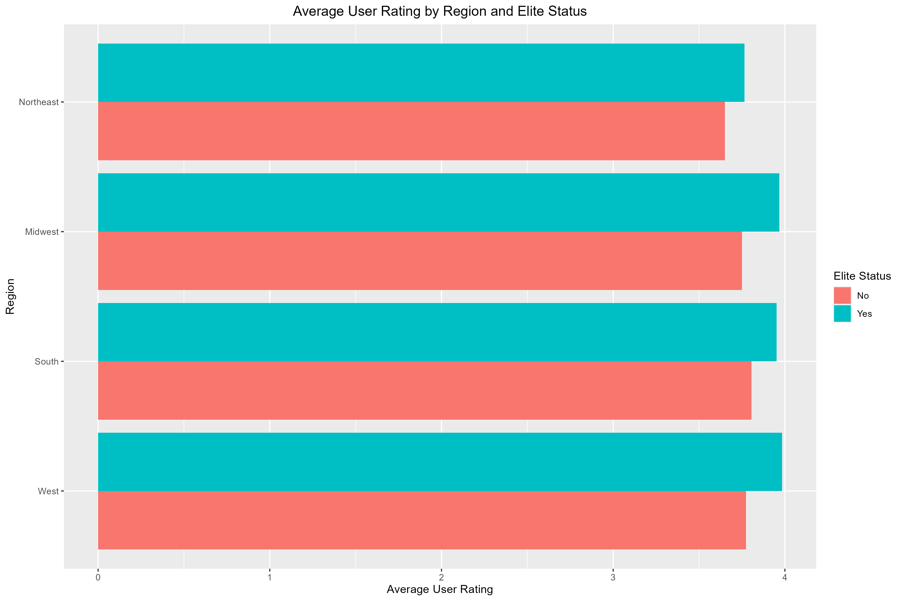
Plot 4: Distribution of Review Count by Business Open Status
The “Distribution of Review Count by Business Open Status” plot shows how the number of reviews is distributed between businesses that are currently open versus those that are closed. This comparison allows us to examine whether businesses that are still operating tend to have more or fewer reviews compared to those that have closed, providing insights into customer engagement and potential correlations between review volume and business success or longevity.
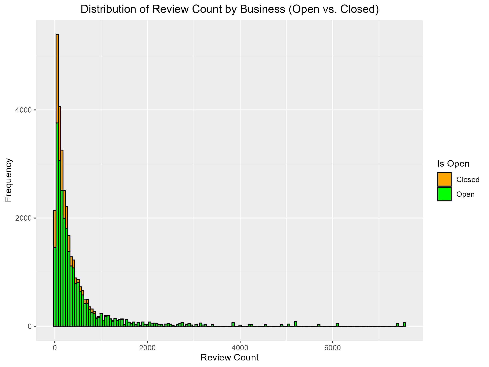
Plot 5: Average User Rating of Businesses with Review Count > 1000 by Region and Elite Status
The “Average User Rating of Businesses with Review Count > 1000 by Region and Elite Status” plot displays the average ratings for businesses that have accumulated more than 1,000 reviews, segmented by region and user elite status. This plot aims to assess whether businesses with high engagement are rated differently by elite versus non-elite users across different regions, helping us identify potential regional variations in user satisfaction for highly popular establishments and whether elite users consistently provide higher or lower ratings compared to non-elite users.
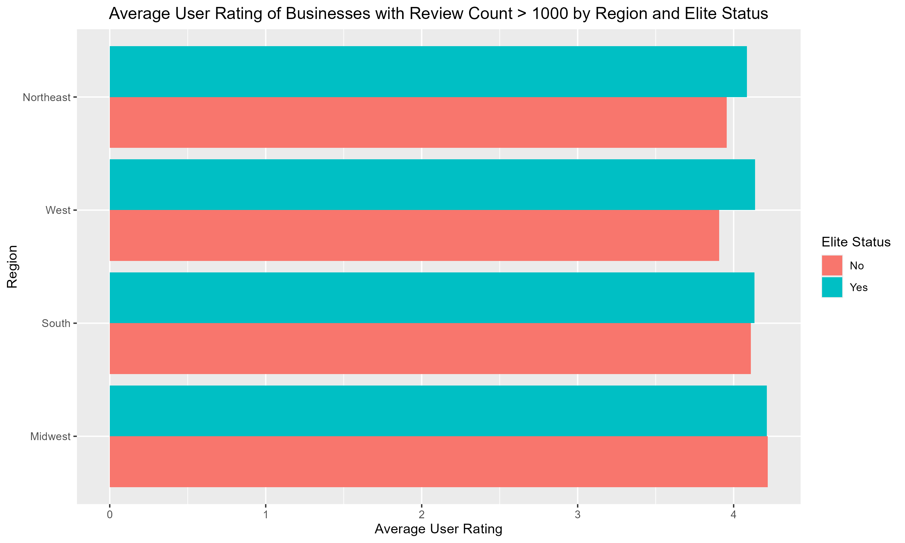
Plot 6: Average User Rating of Businesses with Review Count > 1000 by Open Status and Elite Status
The “Average User Rating of Businesses with Review Count > 1000 by Open Status and Elite Status” plot shows the average ratings for businesses that have received over 1,000 reviews, segmented by whether the business is currently open or closed, and by user elite status. This visualization helps us determine if there is a difference in how elite and non-elite users rate highly-reviewed businesses based on their open status, providing insights into whether ratings might reflect a business’s success or its likelihood of remaining open.
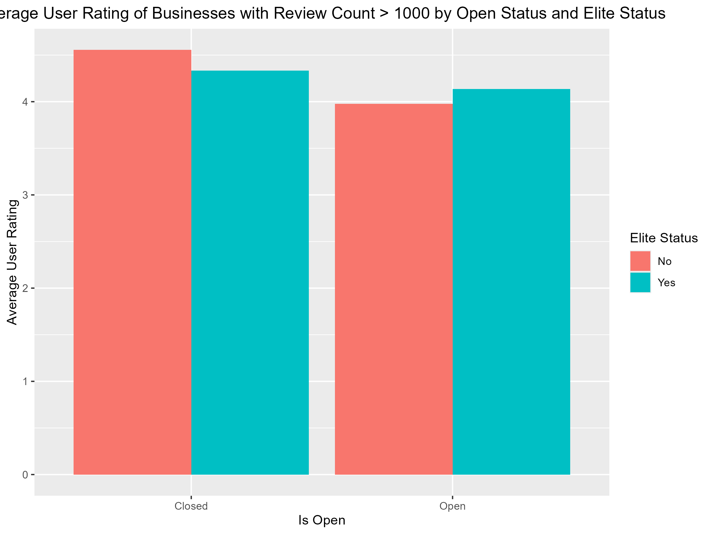
Plot 7: Average User Rating of Businesses with Review Count < 1000 by Region and Elite Status
The “Average User Rating of Businesses with Review Count < 1000 by Region and Elite Status” plot displays the average ratings for businesses with fewer than 1,000 reviews, segmented by region and user elite status. This plot helps us understand how elite and non-elite users rate less popular businesses across different regions, revealing potential differences in rating behavior based on elite status and geographic location, as well as regional factors that might influence user satisfaction for businesses with lower engagement.
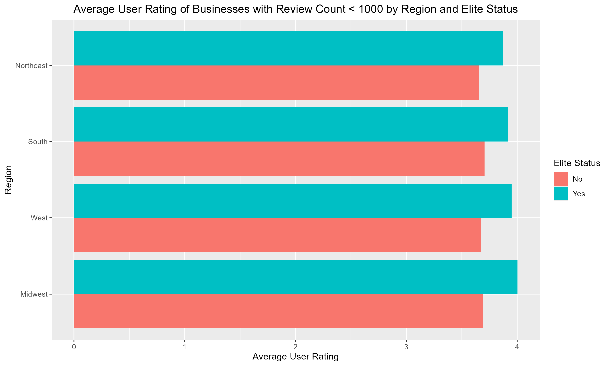
Plot 8: Average User Rating of Businesses with Review Count < 1000 by Open Status and Elite Status
The “Average User Rating of Businesses with Review Count < 1000 by Open Status and Elite Status” plot shows the average ratings for businesses with fewer than 1,000 reviews, segmented by whether the business is open or closed, and by user elite status. This plot helps us assess whether elite and non-elite users rate less popular businesses differently depending on whether they are still operating, providing insights into how user ratings may relate to the success or closure of businesses with lower engagement.
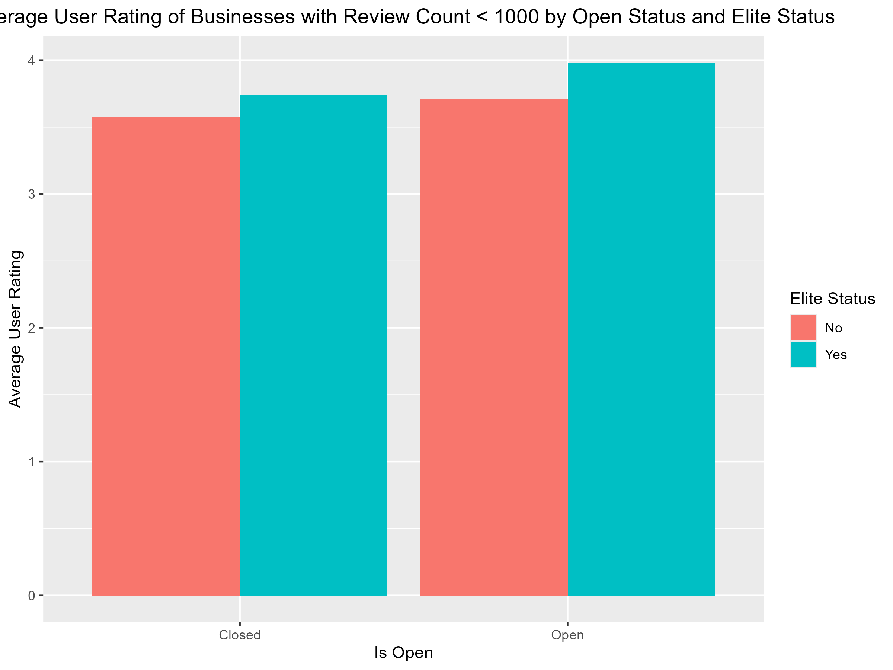
Plot 9: Relationship Between Number of Fans and User Rating by Region and Open Status
The “Relationship Between Number of Fans and User Rating by Region and Open Status” plot visualizes how the number of fans a user has correlates with their ratings of businesses, segmented by both regions and whether the business is open or closed. This plot helps us understand if users with more fans, who may be more influential, tend to give different ratings based on regional factors and the current status of the business, providing insights into whether user popularity affects rating behavior and how this varies by location and business longevity.
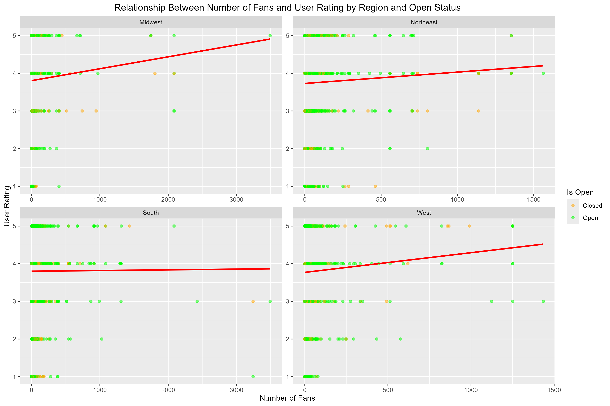
Based on our exploratory analysis, we identified several key insights into how user ratings vary based on elite status, geographic region, business status, and user influence.
Distribution of User Ratings by Elite Status: Non-elite reviewers are more likely to give higher ratings compared to elite reviewers, with significantly more 5-star ratings coming from non-elite users. This suggests a more generous evaluation pattern among non-elite reviewers.
Average Rating by Elite Status: Both elite and non-elite reviewers give an average rating of 4.0 stars to take-out establishments, indicating similar overall attitudes towards these businesses.
Distribution of User Ratings by Region and Elite Status: Geographic differences affect rating behavior, with elite users providing higher ratings, especially in the Midwest (4.0 stars). Non-elite reviewers tend to give similar average ratings across all regions (3.7 stars).
Impact of Business Open Status and Review Counts: Open businesses generally have more reviews than closed ones, suggesting that higher engagement may be linked to business longevity.
High Review Counts (>1000):
Non-elite reviewers give consistently higher average ratings than elite reviewers, except in the South.
Open businesses receive higher ratings from both elite and non-elite users compared to closed businesses. For closed businesses, elite users give much lower ratings (3.1 stars) compared to non-elite users (4.2 stars), implying that elite reviews may influence business survival.
Low Review Counts (<1000):
Elite users tend to rate businesses with fewer reviews more favorably than non-elite users across all regions. This may indicate elite reviewers having better experiences, meeting higher expectations, or possible sponsorship.
The difference in average ratings between open and closed businesses is minimal for businesses with low review counts, regardless of elite status.
Relationship Between Number of Fans and User Rating: There is a high correlation between the number of fans a user has and the ratings they give, particularly in the Midwest and West regions. This suggests that more popular users may be more inclined to rate businesses favorably, which could reflect their influence on user engagement.
2.3.2 Statistical Data Analysis
Factorial Anova
A Factorial ANOVA was conducted to compare the main effects of Review Type and State Regions and the interaction between Review Type and State Regions on User Star Ratings of Takeout Restaurants. Review Type included two levels (Elite Review, Non-Elite Review) and State Regions types included four levels (Midwest, Northeast, South, West). All effects were statistically significant at the .05 significance level.
The main effect for Review Type was significant, F(1, 323848) = 1419,98, p < .001, with a small effect size, η2 = 0.004, 95% CI [0.00, 1.00], indicating a significant difference between the two review types. Specifically, the mean rating for non-elite reviewers (M = 3.74, SD = 1.49) was lower than that for elite reviewers (M = 3.95, SD = 1.05), suggesting that elite reviewers tend to give higher ratings.
The main effect of State Region was significant, F(3, 323848) = 71.79, p < .001, with a smaller effect size, η2 = 0.0007, 95% CI [0.00, 1.00], indicating that there were significant differences in mean ratings across regions. Specifically, the mean ratings were as follows: Midwest (M = 3.81, SD = 1.38), Northeast (M = 3.73, SD = 1.38), South (M = 3.82, SD = 1.39), and West (M = 3.79, SD = 1.43).
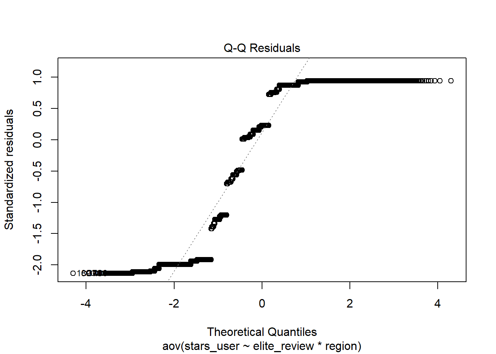
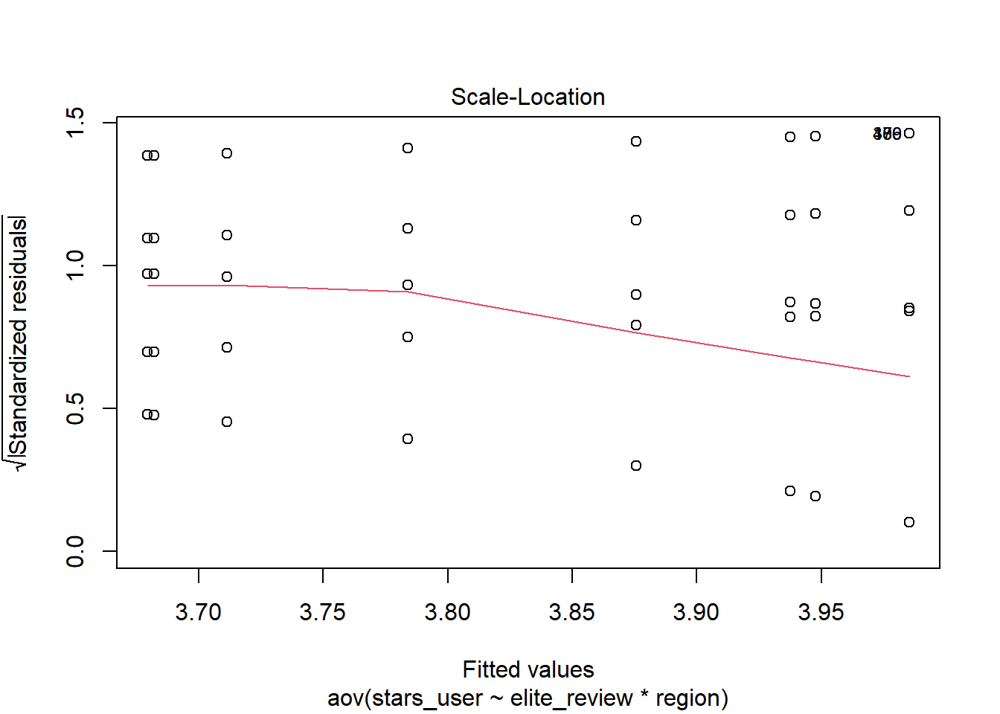
Pairwise comparisons with Bonferroni adjustment revealed that the Northeast had significantly lower mean ratings compared to the Midwest (p < .001), South (p < .001), and West (p < .001). The South had significantly higher mean ratings compared to the Northeast (p < .001) and the West (p < .001), but not significantly different from the Midwest (p = .146). The Midwest and West were not significantly different (p = .062).
The interaction effect of Review Type x State Region was also significant, F(3, 323848) - 12.29, p < .001, with a very small effect size, η2 = 0.0001, 95% CI [0.00, 1.00].
These results indicate that both Review Type and State Region had statistically significant, though small, effects on rating, with the Northeast region generally showing the lowest ratings, and elite reviewer giving slightly higher ratings overall. The interaction between Review Type and State Region had a minimal influence on the results.
Regression
A multiple linear regression was calculated to predict User Ratings (stars_user) based on Elite Review Status (elite_review), Review Count (review_count_user), Number of Fans (fans), and whether the Business is Open (is_open). A significant regression equation was found, F(4, 323851) = 603.4, p < .001, with an R² of .007. This indicates that approximately 0.74% of the variance in user ratings is explained by the variables included in the model, suggesting that other factors not included in the model may also contribute significantly to predicting user ratings.
Participants’ predicted user rating is equal to 3.59 + 0.2315 (elite_review) - 0.0000868 (review_count_user) + 0.0001787 (fans) + 0.1824 (is_open), where:
elite_review is coded as 1 if the user has elite status and 0 otherwise,
is_open is coded as 1 if the business is open and 0 if it is closed.
User ratings increased by 0.2315 stars for users with elite status and by 0.1824 stars for businesses that are open. Both elite_review and is_open were significant predictors of user ratings (p < .001). While review_count_user had a small negative effect (with user ratings decreasing by 0.0000868 stars for each additional review written), and fans had a small positive effect (with user ratings increasing by 0.0001787 stars for each additional fan), their contributions to the model were also statistically significant.
In conclusion, while elite status and the open status of a business have a noticeable positive impact on user ratings, the overall explanatory power of the model is quite low, as indicated by the R² value. This suggests that other unexamined factors are likely influencing user ratings. Future research could explore additional variables, such as service quality or price, to gain further insights into the factors that influence users’ ratings.

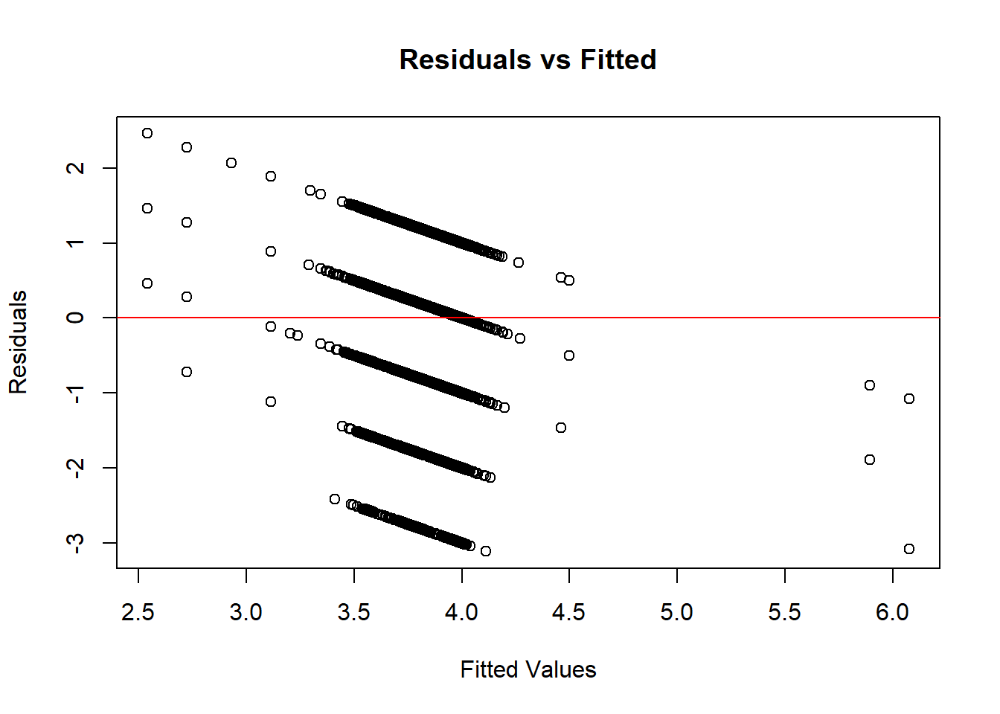